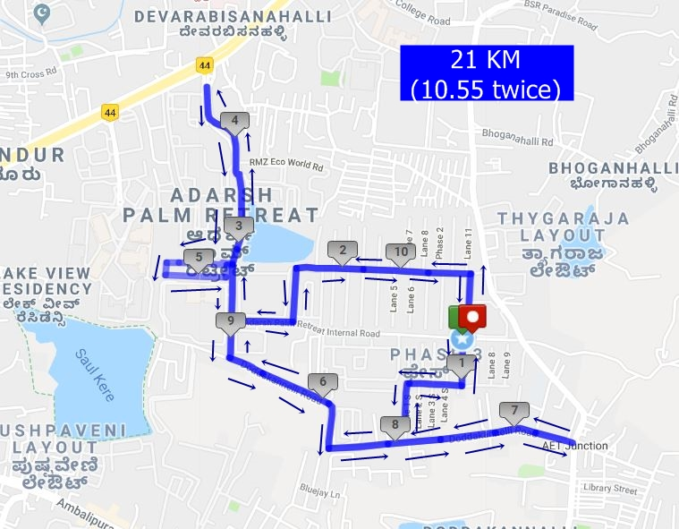
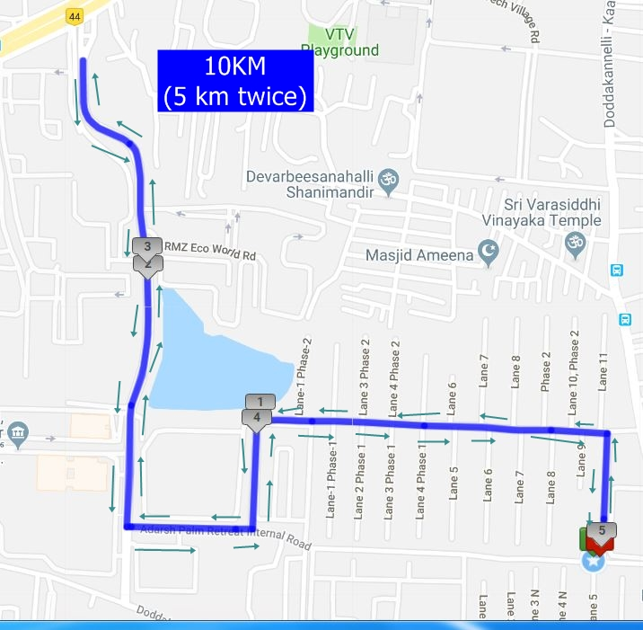
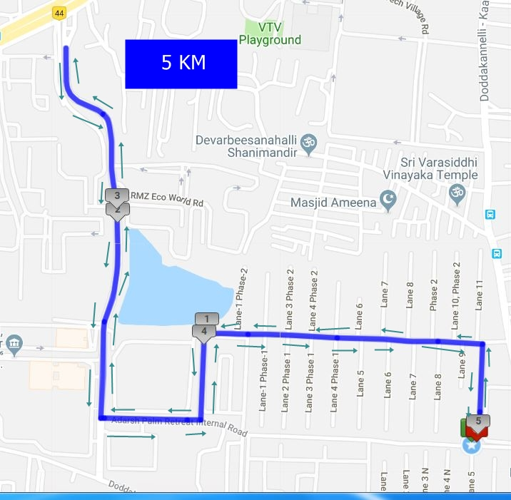
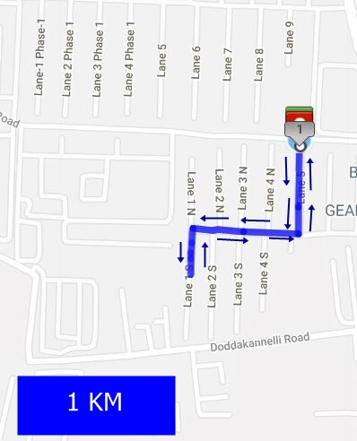
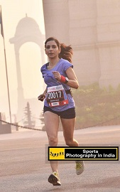
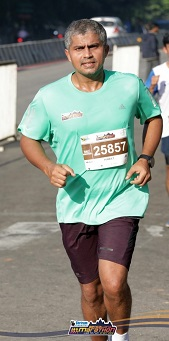
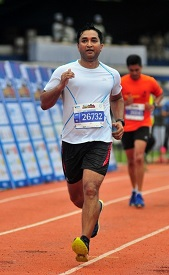

Welcome to UST Global APR Marathon 2018

This year the annual APR Marathon is on Dec 2nd 2018.
Register NowHistory:
8 Years ago, a few like-minded people in Adarsh Palm Retreat got together with the idea of organizing an event, which would engage the community in a fun yet healthy way, but would also raise funds for some community service/ causes in order to give back to the world around them.
This is the grassroots beginning of the APR Marathon (formerly called as Walkathon), which has now become an annual, cross-community event, and is the flagship fundraiser event of the APR Charitable Trust (ACT).
APR Marathon Race Details
- APR Marathon Registration and Bib Pickup:
- Race timing:
- Race Route:
- Contact: AprMarathonSupport@googlegroups.com

5:55 AM - Half Marathon
6:15 AM - 10 K
7:55 AM - 1 K
8:00 AM - 5 K
6:15 AM - 10 K
7:55 AM - 1 K
8:00 AM - 5 K
Half Marathon:

10KM:

5KM:

1KM:

APR Marathon - Know your people
Race Director |
|
|---|---|
|  | Nirupma believes running gives her mental relief, releases stress and fills her with inner peace. A mother of 2 boys, with the typical household challenges, but life changed since she joined aerobics. She took up running from 2009 and since then she has run many races in India. Now she is a podium finisher, in most of the events she participates in. She believes that, any fitness regime to stay fit will help develop physical strength and also makes you a strong runner. She discourages runners from consuming refined sugar, saturated fat and smoking. Focus on good carbs, protein, fruits and salads and drink tons of water the whole day. Nirupma is trainer for past 16 years. She owns many trainer certificates: Certified advance personal trainer Licensed Zumba instructor Reebok certified Holds certificate in Pilates , stability ball training and resistence band training Pursuing ACE certification And training for kettle bell and barbell certification called the Big lift certification by proton fitness academy Running coach Name of training school - Decathlon Fitneskool Runners based at Decathlon Sarjapur Road Podium finisher in the running events that is held across the country in the distance category of 10 km , 21 km and 42 km races. Personal best timing for 5 km - 21 min 45 sec 10 km - 45 min 13 sec 21 km - 1 hour 34 min 42 km - 3 hour 36 min Boston qualifier for the past 2 years Conducts session at Adarsh Palm Retreat for past 9 years Have been winning podium in the major national events in the amateur category Standard chartered mumbai marathon Now called Tata Mumbai Marathon Airtel Delhi Half Marathon Bengaluru Tougher 10 k Challenge Spirit Of Wipro Run Fitness is my passion my calling and my profession Her email ID is singh.nirupma@gmail.com and people can reach out to her for running tips. FB: https://www.facebook.com/nirupma.singh.33?fref=ts |
Half Marathon Pacer - 2 Hrs |
|
|  | Puneet Dhir , is a strong believer that Tough Runs Don’t Last, Tough Runners Do. From running one-event-a-year (2010), he has moved to running regular 10Ks and half-Marathons in the last 3 years. His best timing for 10K is 48:30 mins and for 21K is 1:48:30 Hrs. His current goal is to “complete” one full-marathon in the next year. He is also proudly associated with running and strength building coaching with Bangalore Fitneskool’s Nirupma Singh. |
Half Marathon Pacer - 2 Hrs 15 Mins |
|
|  | Ravi Kanojia , Ravi Kanojia is a software professional and a passionate runner. Ravi has long distance running experience of over 8 years and he has participated in numerous HMs and 10Ks. For the last three years he is part of Bangalore Fitnesskool runners following the structured running focused training program which has resulted in improved timings and injury free running. He firmly believes that challenge of long distance running is easier to achieve by running in a group. His running philosophy is - Run freely and run with your heart. Ravi's personal best time is 1 Hr 50 Mins for half marathon and 50 Mins for 10K. |
10K Pacer - 60 mins |
|
| Only the disciplined ones are free in life. If you aren’t disciplined, you are a slave to your moods. - Eliud Kipchoge Manish got into running 10 years ago and transitioned to barefoot running subsequently. He has participated in many running events. Below are some of his best timings: 5 KM - 23 Mins and 28 Secs 10 KM - 48 Mins and 27 Secs Half Marathon (21.42 KM) - 1 Hr and 56 Mins Full Marathon (42.14 KM) - 4 Hrs and 31 Mins Manish is passionate about coaching people in imbibing fitness in a sustainable way. He conducts coaching sessions in APR for strength and conditioning workouts and improving the running form for injury free healthy living. He believes that fitness should not be a one-off activity, but rather a sustainable way of life. Manish can be reached at 98867 42297. | |
10K Pacer - 70 mins |
|
 |
Jyothi Kopparapu , has been a resident of APR since 2014 and has been teaching Pilates for three years . She started running from 2008 and has done several 10k and Pinkathon races. She started with the toughest course in Hyderabad and that was her first half marathon. She teaches Pilates and practices yoga thrice a week and runs twice a week. Her advice - Eat well and eat healthy |